Pourquoi « Petite Part »
Ce livre ne vous demandera pas de renoncer à ce que vous aimez. Il vous demandera d'en prendre une petite part.
Toute l'idée tient dans ces deux mots. On ne grossit pas parce qu'on mange une part de gâteau. On grossit parce qu'on mange la grande part, puis le reste du plat, puis le paquet de biscuits devant la télé, presque sans s'en rendre compte. Et on n'arrive pas à maigrir parce qu'on passe de « tout » à « rien », jusqu'au jour où l'on craque.
Entre les deux, il existe une voie plus simple : garder le plaisir, réduire la quantité, et comprendre ce qui se passe dans notre tête quand on mange.
Ce que vous allez trouver ici
- Pourquoi la malbouffe nous fait manger plus que ce dont on a besoin, et pourquoi ce n'est pas un manque de caractère.
- Pourquoi la volonté ne suffit pas, et ce qui marche à sa place.
- Pourquoi les régimes stricts échouent presque toujours sur la durée.
- La méthode de la petite part, concrètement, assiette par assiette.
- Le lien entre nos émotions et ce que nous mangeons.
- La place du sport, sans culpabilité et sans exagération.
- Un plan simple pour commencer dès lundi.
À qui s'adresse ce livre
À celles et ceux qui ont déjà essayé des régimes, qui ont perdu puis repris, et qui en ont assez de se sentir coupables. À ceux qui veulent retrouver une ligne qui leur va, sans compter chaque calorie toute leur vie et sans se priver de tout.
Ce livre a été écrit à quatre mains : un homme qui a décidé de changer sa façon de manger et de le montrer semaine après semaine, et une psychologue qui accompagne au quotidien des personnes dans leur rapport à elles-mêmes. Les deux regards se complètent : le terrain et la compréhension.
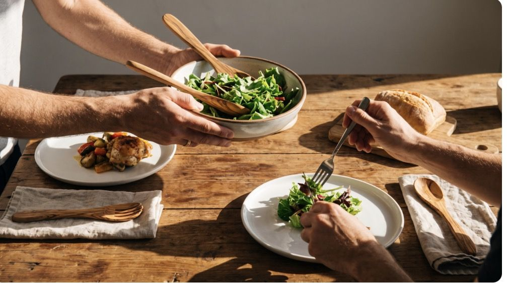
Chapitre 1 — Ce n'est pas votre faute
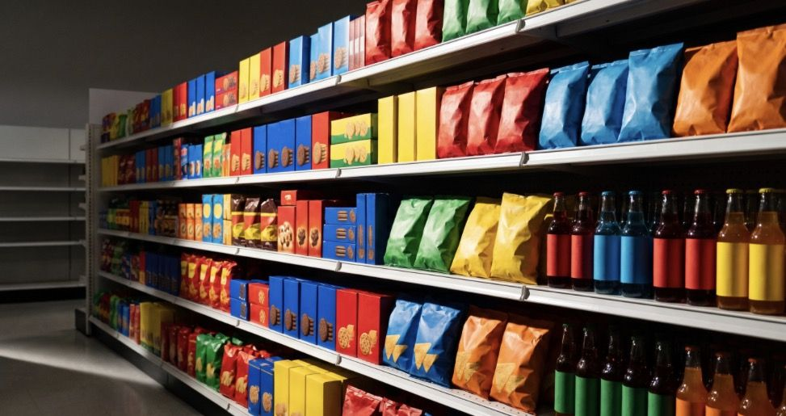
Si vous avez du mal à vous arrêter devant un paquet de chips, ce n'est pas que vous êtes faible. C'est que ce paquet a été conçu pour ça.
Des aliments fabriqués pour qu'on en reprenne
Une grande partie de ce qu'on trouve en rayon n'est plus vraiment de la cuisine. Ce sont des produits ultra-transformés : des ingrédients découpés, recomposés, auxquels on ajoute sucre, gras, sel, arômes et texturants.
Le but est simple : que ce soit bon tout de suite, facile à manger vite, et qu'on ait envie d'y revenir. Le croustillant qui fond en bouche, le mélange sucré-gras qu'on ne trouve presque jamais dans la nature, les portions « individuelles » qui n'en sont pas : tout est pensé pour vendre plus.
Ce que montre la recherche
En 2019, un chercheur américain, Kevin Hall, a mené une expérience devenue célèbre. Des volontaires ont vécu quatre semaines dans un centre de recherche. Pendant deux semaines, ils mangeaient des produits ultra-transformés ; pendant deux autres, des aliments simples et peu transformés. Dans les deux cas, ils pouvaient manger autant qu'ils voulaient.
Résultat : avec les produits ultra-transformés, ils mangeaient en moyenne environ 500 calories de plus par jour, et ils prenaient du poids. Avec les aliments simples, ils mangeaient moins sans y penser, et ils en perdaient.
Personne ne leur avait demandé de faire attention. Ce n'est pas leur volonté qui a changé, c'est le contenu de l'assiette.
Pourquoi on mange plus sans s'en rendre compte
- On mange plus vite. Ces produits se mâchent peu. Le cerveau met une vingtaine de minutes à recevoir le signal « c'est bon, j'ai assez mangé » ; quand on mange vite, on a déjà trop mangé avant qu'il arrive.
- Ils calent peu. Peu de fibres, peu de protéines, peu d'eau : beaucoup de calories pour un petit volume, et la faim revient vite.
- Ils sont partout. Au supermarché, à la station-service, au travail, à la maison. Plus on voit un aliment, plus on en mange.
- Les portions ont grossi. Les assiettes, les verres, les paquets sont plus grands qu'il y a quarante ans. Et on a appris à finir ce qu'on nous sert.
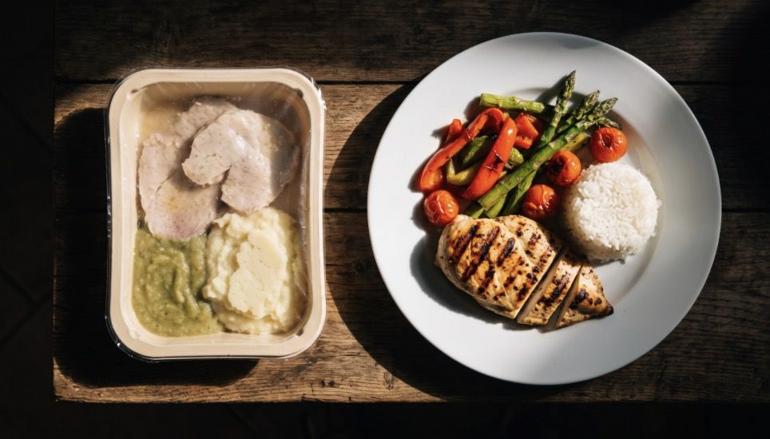
Chapitre 2 — Le mythe de la volonté
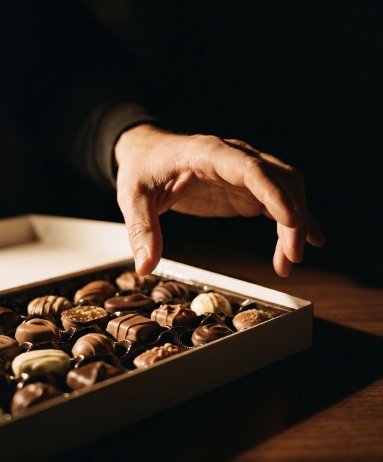
« Il suffit d'avoir de la volonté. » C'est sans doute la phrase la plus répétée sur le poids, et l'une des plus fausses.
La volonté s'use
La volonté fonctionne comme une batterie qui se vide dans la journée. Le matin, on résiste aux viennoiseries sans effort. Le soir, après une journée de travail, les enfants, les soucis, la fatigue, on ouvre le placard « juste pour un biscuit ».
Ce n'est pas un manque de sérieux. C'est humain. Compter uniquement sur la volonté, c'est se condamner à perdre le combat tous les soirs vers 21 heures.
Ceux qui réussissent résistent moins
Les personnes qui gardent la ligne sur la durée ne sont pas plus fortes que les autres. Elles ont simplement moins d'occasions de devoir résister.
- Elles n'achètent pas de paquets de gâteaux « pour les invités ».
- Elles ont des fruits posés sur la table, pas des bonbons.
- Elles mangent à heures à peu près fixes, donc arrivent moins affamées aux repas.
- Elles ont des habitudes qui tournent toutes seules, sans y penser.
La vraie stratégie n'est pas de gagner chaque bataille. C'est d'en avoir le moins possible à mener.
Remplacer la volonté par des habitudes
Une habitude, c'est une décision qu'on n'a plus besoin de prendre. On ne se demande pas chaque matin si on va se brosser les dents : on le fait.
Avec la nourriture, c'est pareil. Le but de ce livre n'est pas de vous faire tenir à la force du poignet, mais de vous aider à installer quelques habitudes simples qui feront le travail à votre place :
- Ce qu'il y a dans vos placards décide de ce que vous mangez le soir.
- La taille de votre assiette décide de la taille de votre portion.
- L'heure de votre repas décide de votre faim en arrivant à table.
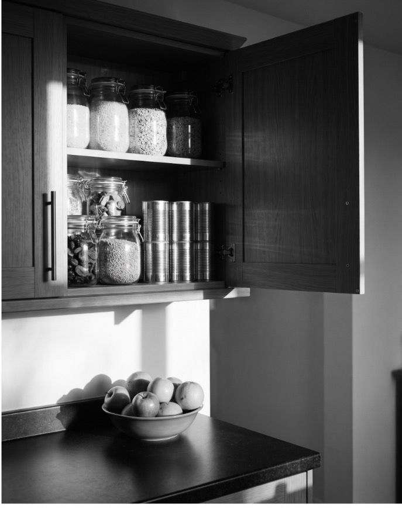
Chapitre 3 — Pourquoi les régimes échouent
Presque tout le monde a déjà fait un régime. Presque tout le monde a déjà repris le poids perdu. Ce n'est pas une coïncidence.
Le cycle « tout ou rien »
Un régime strict fonctionne souvent au début. On supprime le pain, le sucre, le fromage, l'apéro. On perd vite. On est content.
Puis la vie reprend le dessus : un anniversaire, une semaine difficile, une soirée entre amis. On craque une fois. Et comme on était dans le « tout ou rien », on se dit : « C'est raté, autant tout lâcher. » Le poids revient, souvent avec un peu plus.
Le corps se défend
Quand on mange beaucoup moins d'un coup, le corps réagit comme s'il traversait une période de disette. La faim augmente, on pense à la nourriture plus souvent, et l'organisme dépense un peu moins d'énergie. Plus la privation est forte, plus cette réaction est forte.
C'est pour ça que les régimes très restrictifs donnent l'impression de se battre contre soi-même. On se bat réellement contre un mécanisme de survie.
L'interdit rend l'aliment plus désirable
Essayez de ne pas penser au chocolat pendant une minute. Difficile, non ? Interdire un aliment le rend plus présent dans la tête, plus désirable, et le jour où on y touche, on en mange beaucoup.
Autoriser une petite part, au contraire, lui enlève son pouvoir. Si on sait qu'on peut en manger demain, on n'a pas besoin de finir la boîte ce soir.
Ce qui marche à la place
| Régime classique | Méthode Petite Part |
|---|---|
| Supprimer des aliments | Garder tout, réduire la quantité |
| Changer tout d'un coup | Changer une chose à la fois |
| Durée limitée (« 4 semaines ») | Habitudes pour toujours |
| Un écart = échec | Un écart = un repas, pas plus |
| Perte rapide, reprise fréquente | Perte lente, résultat qui tient |
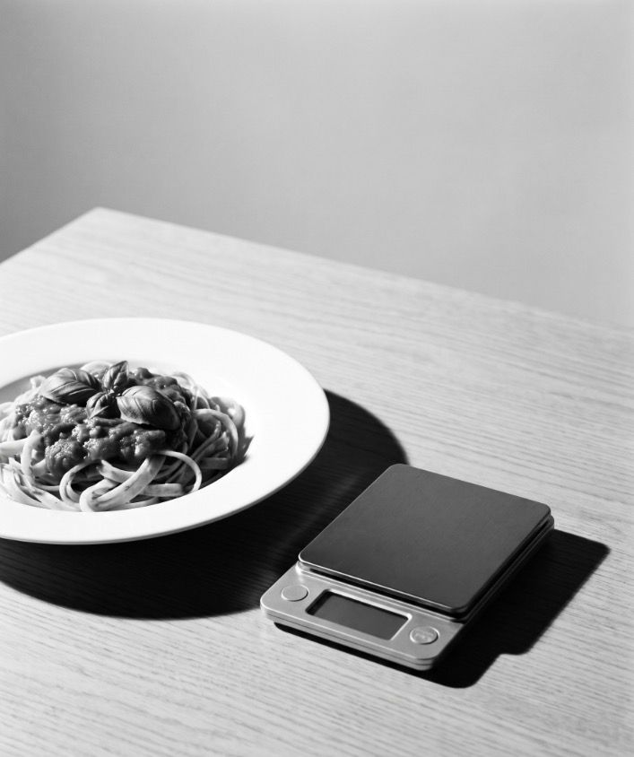
Chapitre 4 — Manger moins sans avoir faim
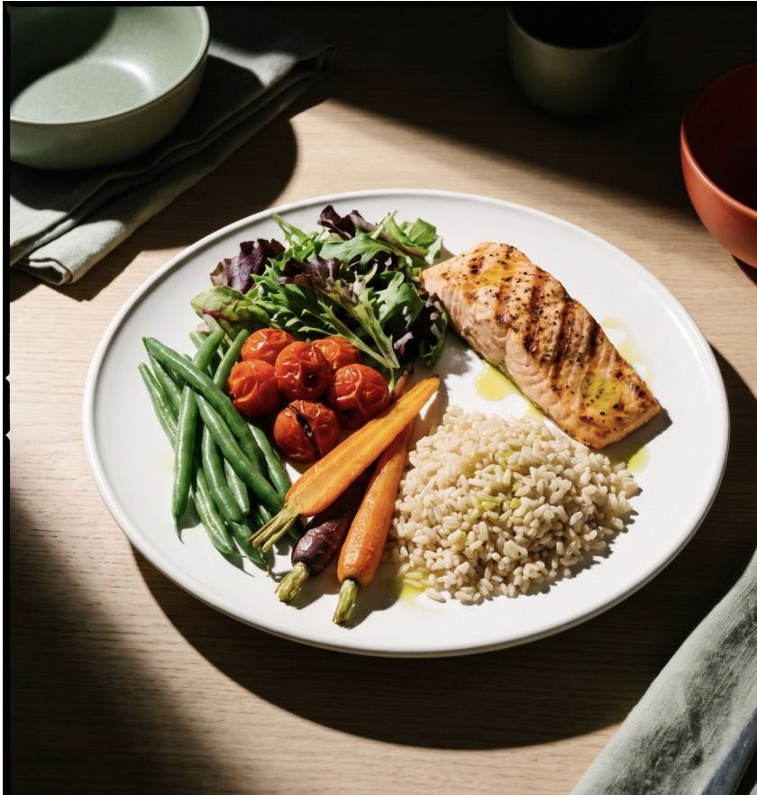
La méthode tient en une phrase : on garde ce qu'on aime, mais on construit l'assiette pour être calé avec moins.
L'assiette Petite Part
- La moitié de légumes. Crus ou cuits, ils prennent de la place, apportent des fibres et calent pour peu de calories.
- Un quart de protéines. Viande, poisson, œufs, fromage blanc, lentilles, pois chiches. Ce sont elles qui évitent d'avoir faim deux heures après.
- Un quart de féculents. Pâtes, riz, pommes de terre, pain. On ne les supprime pas, on les remet à leur place.
- Un peu de bon gras. Un filet d'huile d'olive ou de colza, quelques noix.
Pas besoin de peser ni de compter. Il suffit de regarder son assiette.
Les gestes qui changent tout
- Prendre une assiette plus petite. Une assiette pleine rassure le cerveau, même si elle est plus petite.
- Servir en cuisine, pas sur la table. Le plat sur la table invite à se resservir sans y penser.
- Manger lentement. Poser la fourchette entre deux bouchées, mâcher, parler. Laisser au cerveau le temps de dire « assez ».
- Commencer par les légumes. Une soupe ou une salade en entrée réduit naturellement ce qu'on mange ensuite.
- Boire de l'eau. La soif se déguise parfois en faim.
- Ne pas arriver affamé. Sauter un repas, c'est la garantie de trop manger au suivant.
La petite part, concrètement
Vous aimez la raclette, les frites, le gâteau du dimanche ? Gardez-les. La règle n'est pas « jamais », c'est « une petite part ».
- Une part de gâteau, pas deux. Savourée lentement, sans culpabilité.
- Les frites en accompagnement d'une salade, plutôt que l'assiette entière.
- La raclette avec une grande salade verte et une pomme de terre de moins.
- Le chocolat : deux carrés après le repas, pas la tablette devant un film.
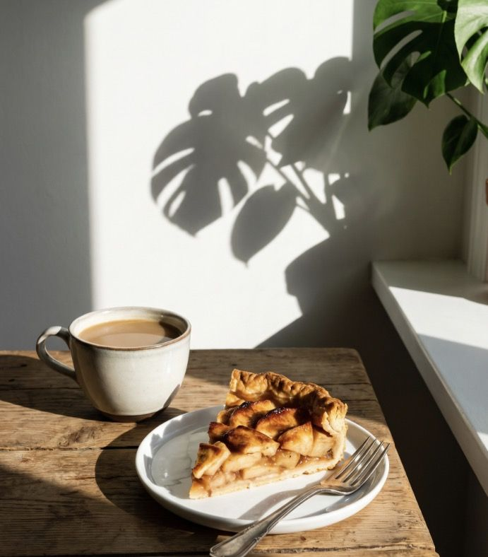
Les courses, le vrai point de départ
Ce que vous mangez à la maison, vous l'avez choisi au supermarché. C'est là que la méthode commence.
- Faire une liste, et ne pas faire les courses le ventre vide.
- Remplir le chariot surtout au rayon frais : fruits, légumes, produits simples.
- Garder les « plaisirs » en petit format plutôt qu'en paquet familial.
Chapitre 5 — Les émotions et la nourriture
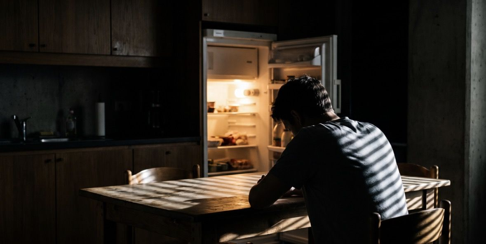
On ne mange pas seulement parce qu'on a faim. On mange aussi parce qu'on est fatigué, stressé, triste, qu'on s'ennuie, ou qu'on veut se faire plaisir après une dure journée. C'est ce qu'on appelle la faim émotionnelle.
Faim du ventre ou faim de la tête ?
| Faim du ventre | Faim de la tête |
|---|---|
| Arrive progressivement | Arrive d'un coup |
| N'importe quel aliment convient | Envie d'un aliment précis (sucré, gras) |
| Peut attendre un peu | Veut être satisfaite tout de suite |
| S'arrête quand on est rassasié | Continue même le ventre plein |
| Pas de culpabilité après | Souvent suivie de culpabilité |
La faim de la tête n'est pas une faute. C'est un moyen que notre cerveau a trouvé pour se calmer. Le problème, c'est quand c'est le seul.
Le cercle de la culpabilité
On mange pour se consoler. On se sent coupable d'avoir mangé. La culpabilité fait mal, alors on mange encore pour se consoler. Plus on se juge sévèrement, plus le cercle tourne vite.
Pour en sortir, la première étape est de remplacer le jugement par la curiosité. Au lieu de « je suis nul, j'ai encore craqué », se demander : « qu'est-ce qui s'est passé juste avant ? »
La pause de trois questions
Quand l'envie arrive, avant d'ouvrir le placard, prenez une minute :
- Est-ce que j'ai vraiment faim ? Si oui, mangez quelque chose de simple et de nourrissant.
- Qu'est-ce que je ressens, là, maintenant ? Fatigue, ennui, colère, solitude, stress.
- De quoi j'ai vraiment besoin ? Parfois c'est de dormir, de parler à quelqu'un, de sortir marcher dix minutes, de souffler.
Si après cette minute vous avez toujours envie de ce carré de chocolat, prenez-le, assis, lentement, en le savourant. C'est ça, la petite part.
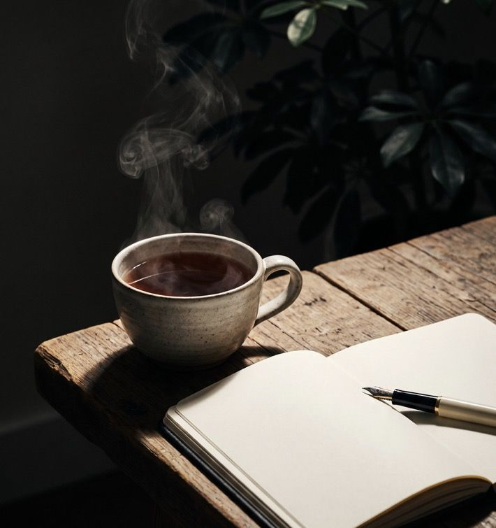
Le rapport au corps
Beaucoup de gens qui veulent maigrir se regardent avec dureté. Or on prend mieux soin de ce qu'on respecte. Le but n'est pas d'atteindre un corps parfait, mais de se sentir bien dans le sien : plus d'énergie, plus d'aisance, une ligne qui vous ressemble.
La photo de la semaine, dans l'appli, n'est pas là pour vous juger. Elle est là pour vous montrer le chemin parcouru, même quand la balance ne bouge pas.
Quand demander de l'aide
Si vous avez l'impression de perdre le contrôle face à la nourriture, de manger de grandes quantités en cachette, de vous faire vomir, de sauter des repas pour compenser, ou si la nourriture occupe vos pensées en permanence, ce n'est plus seulement une question d'habitudes. Parlez-en à votre médecin ou à un psychologue. Ces difficultés se soignent, et il n'y a aucune honte à se faire accompagner.
Chapitre 6 — Bouger pour tenir dans le temps
Soyons honnêtes dès le départ : pour perdre du poids, c'est surtout l'assiette qui compte. Une heure de sport ne compense pas un paquet de biscuits. Mais pour garder la ligne, pour le moral et pour la santé, bouger fait une énorme différence.
Ce que le sport fait vraiment
- Il aide à ne pas reprendre. Les personnes qui gardent leur poids sur la durée sont presque toujours des personnes qui bougent régulièrement.
- Il garde les muscles. Quand on maigrit, on veut perdre du gras, pas du muscle. Bouger aide à le protéger.
- Il calme le stress. Et moins de stress, c'est moins de faim émotionnelle.
- Il améliore le sommeil. Et bien dormir réduit les envies de grignoter.
- Il change le regard sur soi. On se sent capable, et ça donne envie de prendre soin de soi.
Le piège à éviter
« J'ai couru ce matin, j'ai le droit à une pizza. » On surestime presque toujours ce que le sport fait dépenser, et on sous-estime ce qu'on mange ensuite. Le sport n'est pas une récompense à échanger contre de la nourriture. C'est un cadeau qu'on se fait à part.
Commencer petit
Inutile de s'inscrire à un marathon. Le meilleur sport, c'est celui qu'on fera encore dans six mois.
- Marcher tous les jours. Vingt à trente minutes, à un bon rythme. C'est déjà beaucoup.
- Bouger dans la journée. Les escaliers plutôt que l'ascenseur, se garer un peu plus loin, aller chercher le pain à pied.
- Quelques exercices simples à la maison. Squats, pompes contre un mur, gainage : dix minutes, deux ou trois fois par semaine.
- Trouver un plaisir. Vélo, danse, natation, jardinage, randonnée : ce qui vous donne envie d'y retourner.
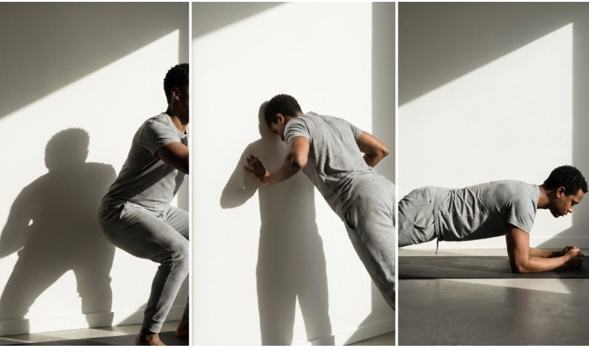
Chapitre 7 — Le plan pour commencer lundi
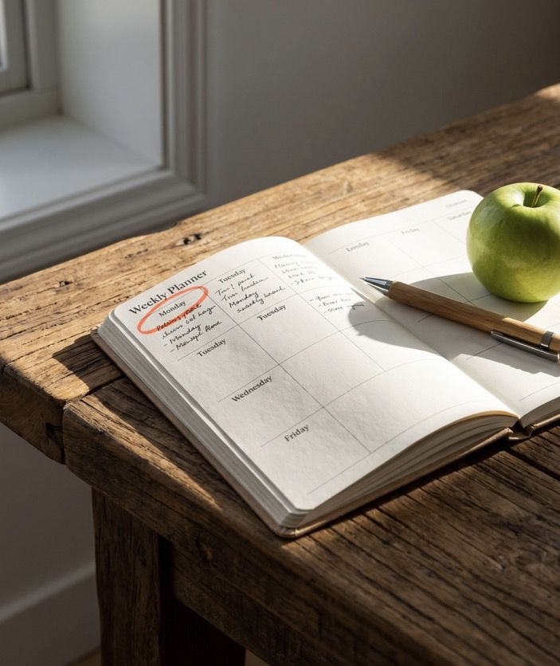
Pas de grand chamboulement. Une habitude nouvelle par semaine, pendant six semaines. Chaque semaine s'ajoute à la précédente.
Six semaines, six habitudes
- Semaine 1 — Observer. Photographiez chaque assiette, sans rien changer. Notez à quels moments vous mangez sans faim.
- Semaine 2 — L'assiette. Adoptez l'assiette Petite Part (moitié légumes, quart protéines, quart féculents) au moins une fois par jour.
- Semaine 3 — Ralentir. Mangez assis, sans écran, en posant la fourchette entre les bouchées.
- Semaine 4 — Les placards. Faites vos courses avec une liste, gardez les plaisirs en petit format.
- Semaine 5 — Bouger. Marchez vingt à trente minutes par jour.
- Semaine 6 — Les émotions. Pratiquez la pause de trois questions avant chaque grignotage.
Les règles du jeu
- Un écart n'annule rien. Un repas trop copieux, c'est un repas. Le suivant redevient normal, sans compenser en sautant un repas.
- Pas de pesée tous les jours. Le poids varie d'un jour à l'autre pour plein de raisons. Une fois par semaine, le même jour, suffit.
- Regarder la tendance, pas le chiffre. Ce qui compte, c'est la direction sur un mois, pas le résultat de mardi.
- Se féliciter. Chaque habitude tenue est une victoire, même si la balance ne bouge pas encore.
Suivre ses progrès
Prenez une photo de vous chaque semaine, dans la même tenue, au même endroit, avec la même lumière. Au bout de quelques mois, le petit film de votre évolution vous montrera ce que le miroir ne montre pas au jour le jour.
Conclusion — Une petite part, chaque jour
Vous n'avez pas besoin d'un régime miracle, ni d'une volonté de fer. Vous avez besoin de comprendre ce qui vous pousse à manger plus, d'organiser votre quotidien pour que ce soit plus simple, et d'être bienveillant avec vous-même quand ça ne se passe pas comme prévu.
Gardez le plaisir. Réduisez la part. Bougez un peu chaque jour. Le reste suit.
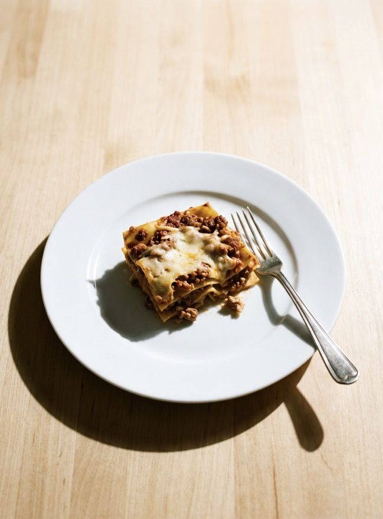
Avertissement santé
Ce livre donne des conseils généraux d'hygiène de vie. Il ne remplace pas l'avis d'un médecin. Si vous avez un problème de santé, un traitement en cours, si vous êtes enceinte, ou si votre rapport à la nourriture vous fait souffrir, parlez-en à un professionnel de santé avant de changer votre alimentation.
Source citée
Hall K. D. et al., « Ultra-Processed Diets Cause Excess Calorie Intake and Weight Gain », Cell Metabolism, 2019.